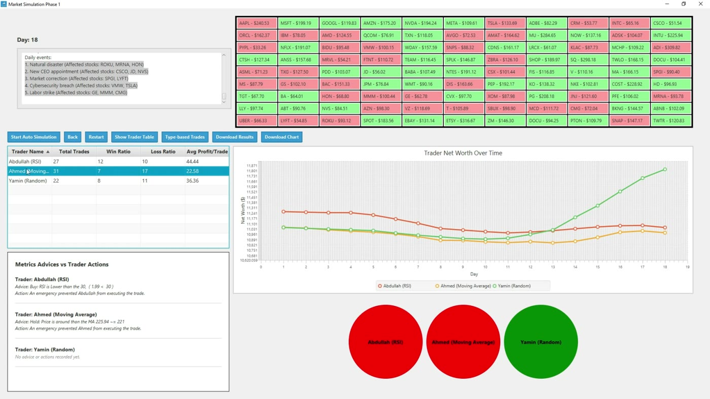
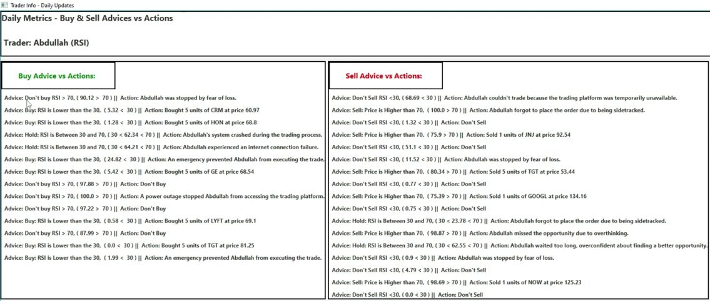
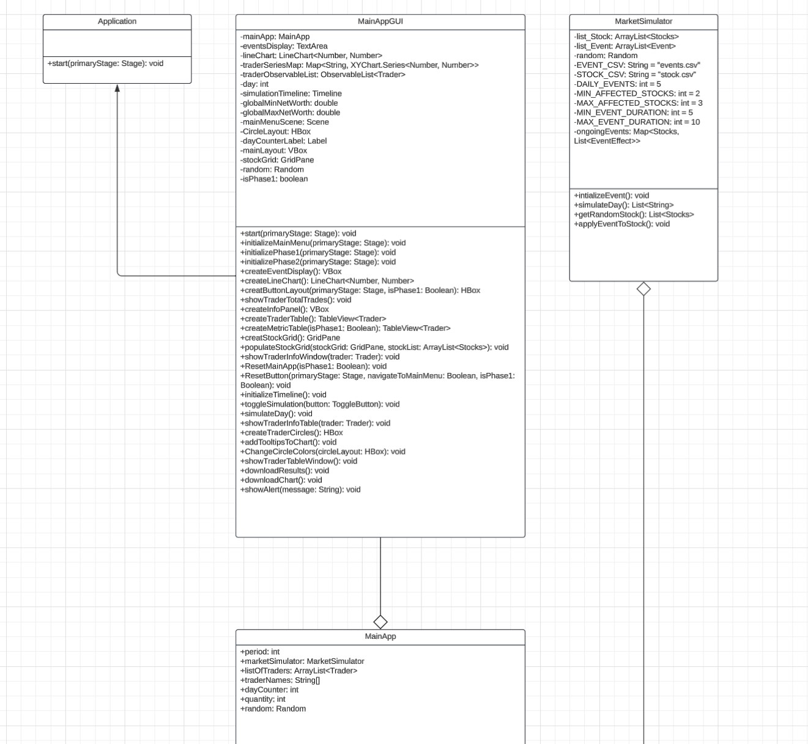
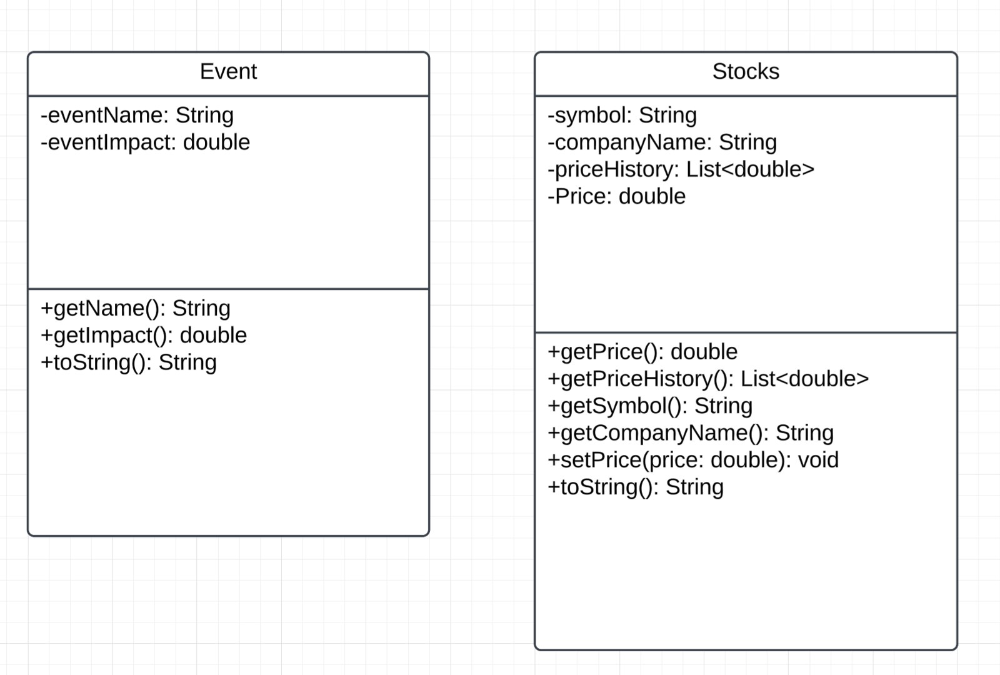
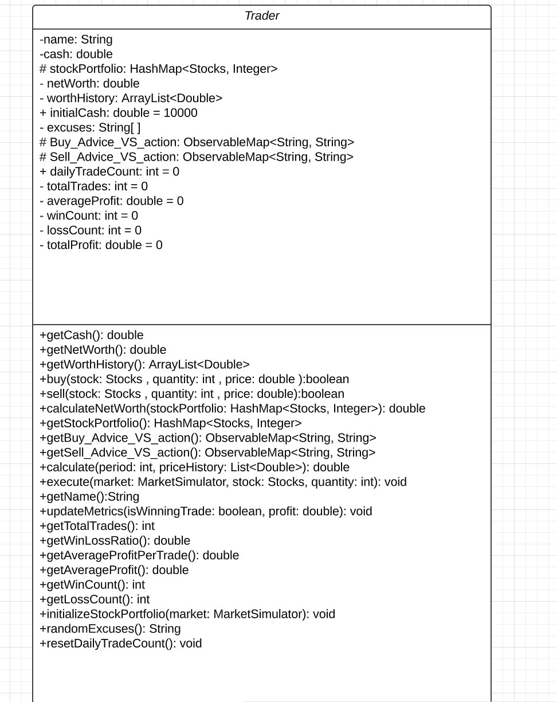
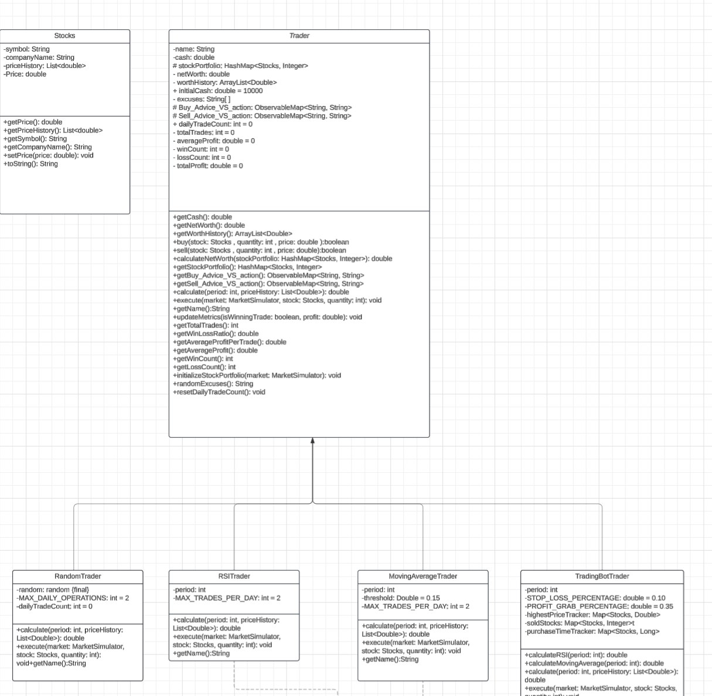
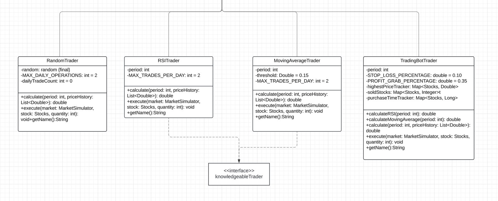
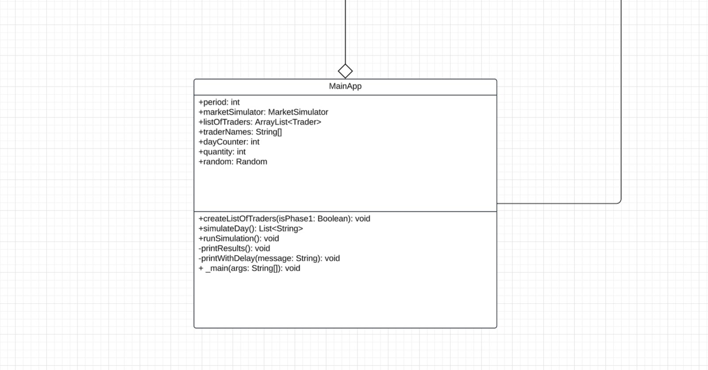

Stock Market Simulator
A Java desktop app where trading bots with different strategies compete in a simulated market, so you can watch which strategy grows its money and why.
The idea
Each trader starts with 10,000 in cash and a few stocks. Every simulated day, random market events (loaded from a CSV file) push some stock prices up or down. Each trader then decides to buy, sell or hold based on its own strategy. The app tracks every trade and shows who is winning.
- Phase 1. Three traders compete: a Random trader, an RSI trader (buys when RSI is below 30, sells above 70) and a Moving Average trader. To make it realistic, traders sometimes ignore good advice with a "human" excuse, like an internet outage or fear of loss.
- Phase 2. An advanced Trading Bot combines RSI and momentum, with a 10% stop-loss and a 35% profit-taking rule, and never makes human mistakes.
The dashboard
The main screen shows the day counter and that day's events, a live grid of stock prices (green rising, red falling), a table of each trader's trades, win ratio and average profit, and a chart of every trader's net worth over time. The coloured circles show at a glance who is ahead. Results and the chart can be downloaded.


How the code is organised (UML)
The program follows object-oriented design: the interface, the simulation logic, the market data and the traders are separate classes, so each part can be changed without breaking the others.

- Application / MainAppGUI. MainAppGUI extends JavaFX's Application class and builds everything you see: the main menu, the Phase 1 and Phase 2 screens, the stock grid, tables, chart, trader circles and the download buttons. A timeline runs one simulated day at a time.
- MainApp. The simulation controller. It creates the list of traders for the chosen phase, keeps the day counter and runs each day by asking the market to update and then letting every trader act.
- MarketSimulator. Loads the stocks and events from CSV files. Each day it picks 5 events, applies each one to 2 to 3 random stocks, and keeps an event active for 5 to 10 days.


Trader is an abstract class that holds everything all traders share: cash, a portfolio of stocks, net-worth history, buy and sell logic, and performance metrics (total trades, wins, losses, average profit). It also stores the advice-vs-action logs and the list of "excuses" used when a trader ignores advice. Each subclass only has to define how it calculates its signal and executes a trade.


- RandomTrader buys and sells at random, up to 2 trades a day. It is the baseline to beat.
- RSITrader and MovingAverageTrader use market indicators (RSI, and a moving average with a 15% threshold). Both implement the knowledgeableTrader interface, which marks them as traders that follow technical advice.
- TradingBotTrader (Phase 2) calculates both RSI and moving average, tracks the highest price and purchase time of each stock, and applies the stop-loss and profit-taking rules.
